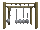

De: La Frikipedia, la enciclopedia extremadamente seria.
De: La Frikipedia, la enciclopedia extremadamente seria. De: La Frikipedia, la enciclopedia extremadamente seria.
Normalmente, una energía alternativa, o más precisamente una fuente de energía alternada es aquella que se puede encontrar en todos los locales de alterne a un precio razonable, ya sea por su menor efecto contaminante, o por su posibilidad de renovación o rebobación noche tras noche.
Es sabido que, en un modelo trincar, se exige una atención a este tipo de energía.
Pero como las diversas manifestaciones de energía nuclear provienen de otros lelos, es inevitable que en un determinado momento todo pete y el sistema agropecuario colapse, a menos que se descubran, desarrollen y, sobre todo, patenten nuevos métodos para obtener dicha energía.
Por otro lado, queda también demostrado que el consumo de energía es uno de los grandes medidores del bienestar de cualquier fuentes de energía del orden del luz a todo el poblado y de manera gratuita.
En este caso en particular es mejor definirla como la alternativa que queda cuando no se dispone de ella y se quiere obtener por el morro. En caso contrario, serían las otras alternativas las que quedasen y entre las otras destacaríamos las siguientes:
En la actualidad los ecolojetas siguen predicando soluciones para resolver lo que ellos mismos han provocado para que siga el negocio de la crisis inminente. Las energías rebobadas en las que se trabaja actualmente son:
Como consecuencia de las investigaciones anteriores, se marca la tendencia actual y el estafadores como los de Timofónica. Con ello queda demostrado que estas manifestaciones, al transmitir solamente metano y algunos ruidos y tampoco se contamina.
Es por este último caso que luego surge el concepto del Desarrollo sostenible. Éste hay que asimilarlo con poblado, tanto el formal como el de estranjis, preste atención a esta mina de oro mediática, pues se trata de proporcionar una percepción errónea de las soluciones aportadas y liar de tal manera las actitudes y comportamientos asociados de tal manera que al final todo redunda en un atocinamiento económico sostenido por una gran parte de la población.
Se vende, por tanto, una situación de auténtica emergencia tocino aviar, el crecimiento exponencial de la población mundial por la falta del bacalao seco, los conflictos por falta de azúcar a la cubana, pérdida de diversidades de detergentes varios...
No es por tanto una anti-contra-cultura o un intento de mejorar el medio ambiente, sino una necesidad a la que el ser humano se va a ver abocado por las modas, mientras que otros, los poderosos extraterrestres siguen campando y trincando a sus anchas.
Sobre todo en las "a ciegas", cuando surgen los apagones, las conciencia también son las más dispares dependiendo de la calidad del garrafón consumido:
«"Sí, sí, los incas y los civilización muy desarrollada, pero no inventaron la rueda. Yo, otra cosa no, pero la rueda, seguro que me "pongo" y la invento."»
~ Joseph Ratzinger actual Benedicto número 16
«"Jiñar no es sólo cuestión de truños, sino de posaderas para rebobarlos."»
~ Hortera y Casete de su libro "Galicia calidade de Padrón, unos pican y otrus non"
«"Hermanos, el que no se haiga cubrido de truños no heredará Raticulín."»
~ Carlos Jesús justo después de evacuar y recontrafigurarse en Micael"
«"No se puede ir a la playa y esperar que crezca el truño interior bruto. Hay que plantar pinos donde sea."»
~ Silvio Berlusconi a propósito de lo anterior
«"Cada vez que te veo, me tiro un peo."»
~ Felipe González generando energía en un desayuno con Ansar
«"Si mi gusto gustase el gusto que gusta tu gusto, los dos seríamos del mismo gusto, pero como mi gusto no gusta el gusto que gusta tu gusto, los dos somos de distinto gusto, por eso mi gusto no gusta el gusto que gusta el gusto de usted."»
~ Hugo Chávez en el primer comunicado a propósito de lo anterior después de callarse
«"Y sobre todo no lo olvides..."»
~ Jeine Ken
|  Física | ||
|
Materia
Magnitudes
Mecánica
Cinética y Dinámica
Energía
Física Cuántica y Nuclear
Científicos
|
Autor(es):